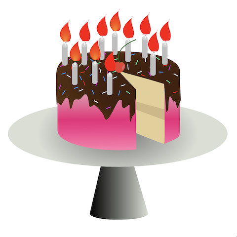
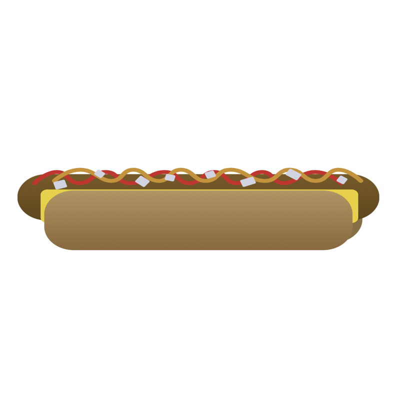
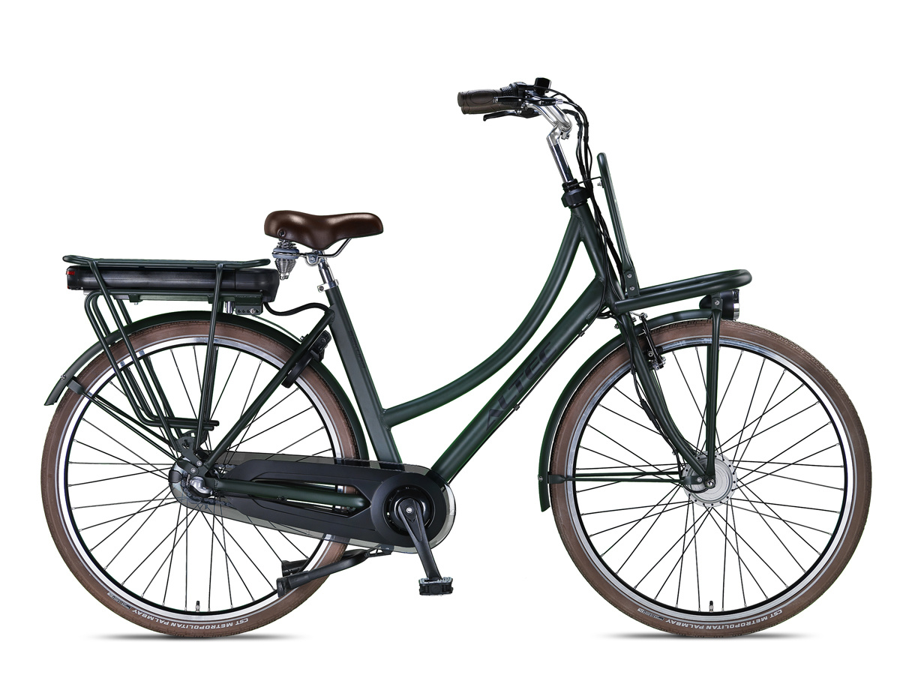
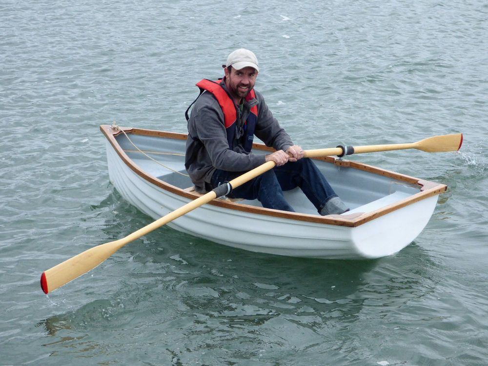
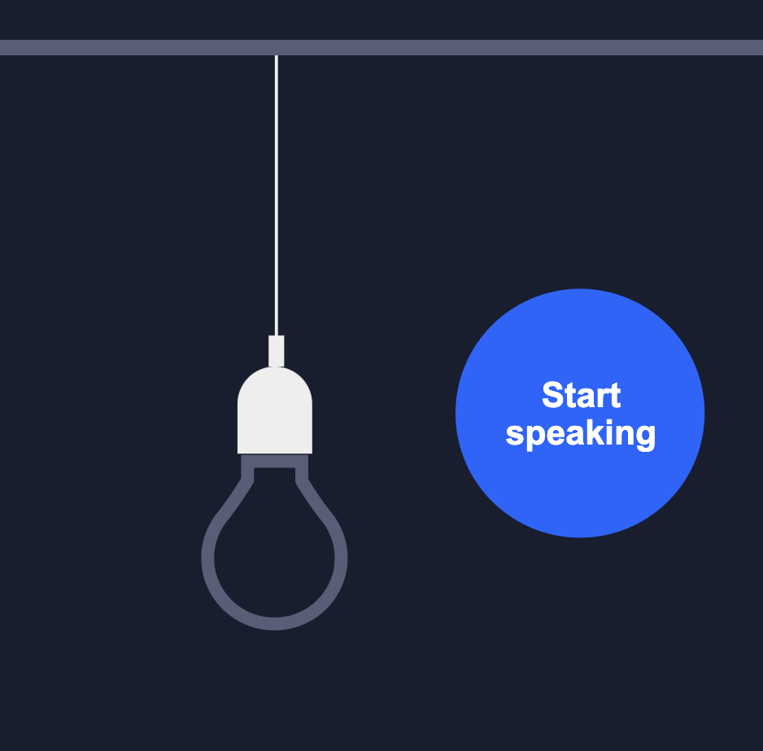
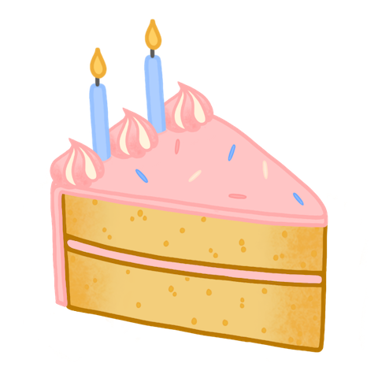
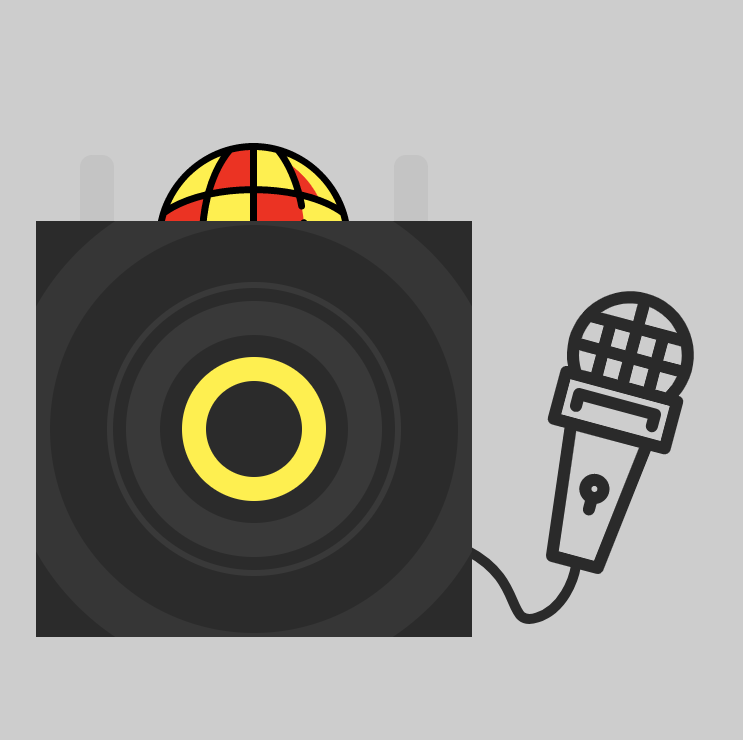
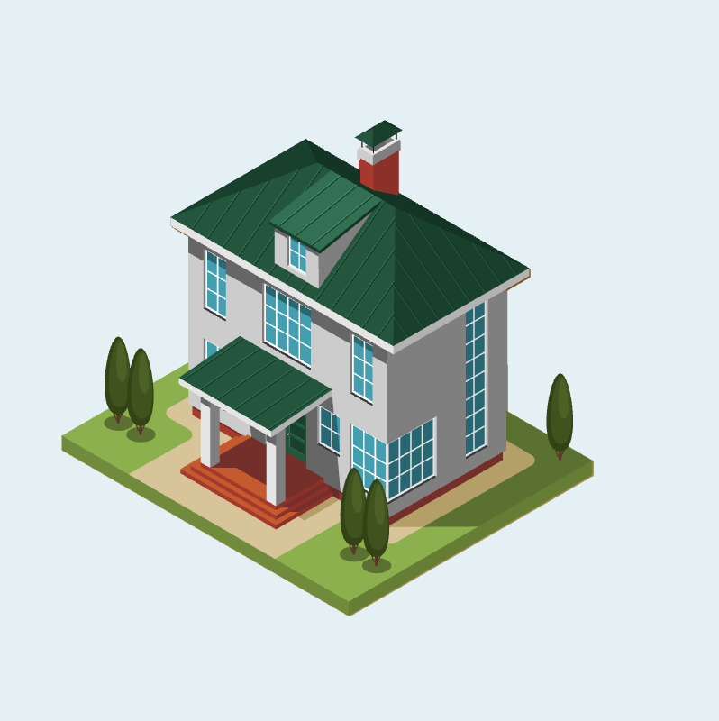
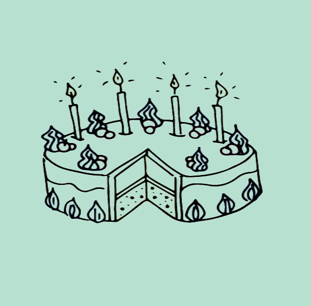

Description
The course Browser Technologies is about learning to build robust and accessible websites using Progressive Enhancement and testing.
Student work
Throughout the course students work on 3 assignements: NPM Install Progressive Enhancement, Break the Web and Design a Progressive Enhanced Browser Technologie.
1 - NPM Install Progressive Enhancement 🛹
Progressive Enhancement is usually explained with the metaphor of an escalator. Heydon Pickering published a brief video about Progressive Enancement in his WEBBED BRIEFS Is progressive enhancement dead yet?. Very funny indeed. In the video he uses the skateboard/scooter analogy to explain the concept of PE.
For their first assignment students have visualised the concept of Progressive Enhancement using a self-invented metaphor.
-

Cake
The frosting and the candles both create a more fun and enjoyable experience, but neither of these are necessary to achieve the goal of eating a piece of cake.
By Chass Kevin Sharon Veerle
Read more -

Hotdog
Looking at the hotdog as PE means, that the core elements of the sandwich should be of good quality. There are people that only want the meat and the bun or these people might be very allergic to ketchup, mayonnaise and/or dried onions. And there are the people that can and want to fully enjoy the hotdog experience.
By Heralt Shabier Sjors Thom -

Bike
Een elektrische fiets rijdt elektrisch waardoor je sneller bij je eindbestemming komt zonder moe te worden. Wanneer de accu leeg is van de fiets kun je er nog steeds mee rijden.
By Inju Rowin Sam Stan B
Read more -

Door
Als de draaideur werkt, symboliseert dit een volledig werkende website. De gebruiksvriendelijkheid is hierbij op zijn hoogst. Als de elektronische draaideur defect is, moet je deze zelf open duwen. De draaideur werkt nog wel, maar gaat niet meer automatisch draaien.
By Johan Nathan B Oussama Sergio
Read more -

Boot
Een roeiboot doet het altijd. Werkt handmatig. Een zeilboot maakt gebruik van wind, maar kan je mee ook roeien. Een motorbood heeft een motor, heeft een zeil, en heeft roeibootjes aanboord.
By jeffrey Marvin Max H Moh
Read more -

Lamp
De User Experience van een lamp wordt nog veel beter wanneer hij aan of uit gezet kan worden door tegen de lamp te praten. Als de voice commands niet werkt kun je de licht schakelaar gebruiken. En als die ook niet meer werkt kun je hem altijd nog in of uit de fitting draaien.
By Giliam Jimmy Merlijn Roeland
Read more -

Cake
Zonder de laag glazuur en de decoraties kan de taart nog steeds gegeten worden, maar deze toevoeging zorgen ervoor dat de gebruikerservaring verbeterd wordt.
By Lisa Lotte Sanne Victor
Read more -

Bluethooth discospeaker
Een website is net als een NOONDAY PARTY SPEAKER M MET DISCOBOL EN BLUETOOTH. Wanneer de lampjes aangaan wordt het één groot feest. Zonder lampjes is het feest er ook, maar in mindere mate. De muziek is waar het om draait, maar daar bouw je dan vette dingen omheen (zoals een feestje).
By Jelmer Jonah Nathan N Nina
Read more -
Chair
By Onika Randy Roy Stan O
Read more -

Toothbrush
Een elektrische tandenborstel is natuurlijk mooi spul. Je hoeft weinig tot geen inspanning te leveren om je tanden lekker schoon te krijgen. Maar wat gebeurt er wanneer je elektrische tandenborstel kapot gaat???? De elektrische tandenborstel blijft te gebruiken, alleen niet meer automatisch...
By Jochem Niels Ralf Sjoerd -

House
Om Progressive enhancement zo goed mogelijk uit te leggen, maken we gebruik van het metafoor “huis bouwen”. Het bouwproces van een huis laat namelijk de verschillende stadia zien van progressive enhancement.
By Guus Jordy Lars Max M -

Cake
By Ben Rick Vincent
Lecturers
-
 Peter-Paul Koch ...
Peter-Paul Koch ...
-
Koop Reynders ...
-
Thijs Spijker ...
-
Leonie Smits ...
Speakers
-
Aaron Gustafson ...
-
Heydon Pickering ...
-
Ischa Gast ...
Program
This course is part of the minor Web Development, a semester program at Communication and Multimedia Design, a design bachelor focused on interactive digital products and services. CMD is part of the Faculty of Digital Media and Creative Industries at the Amsterdam University of Applied Sciences.